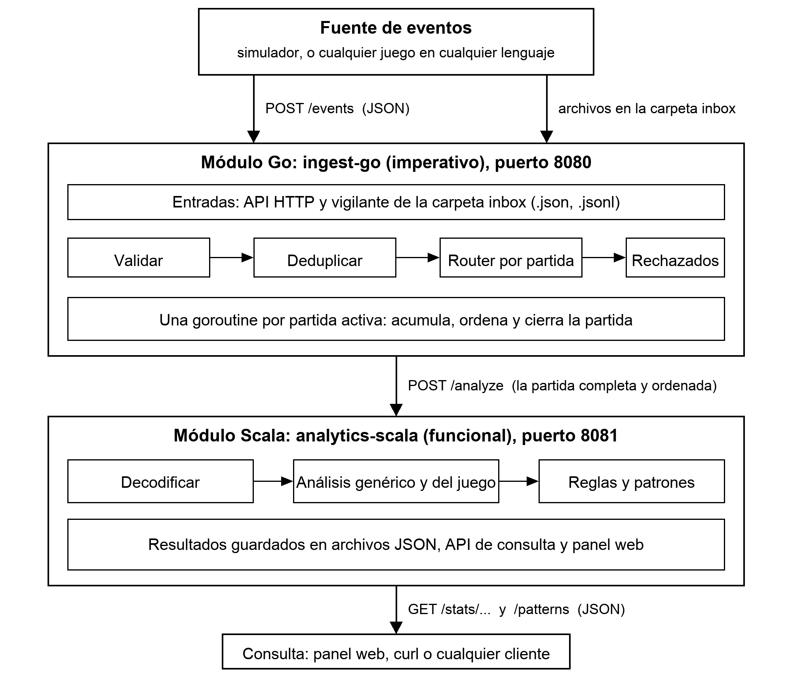
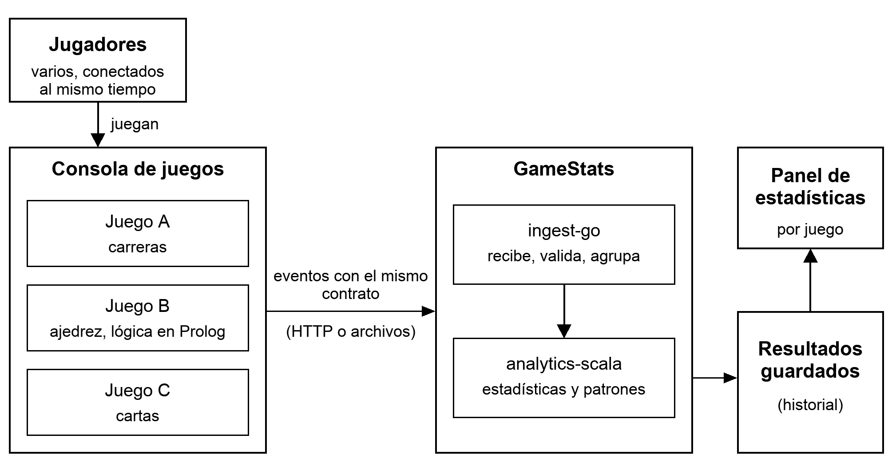
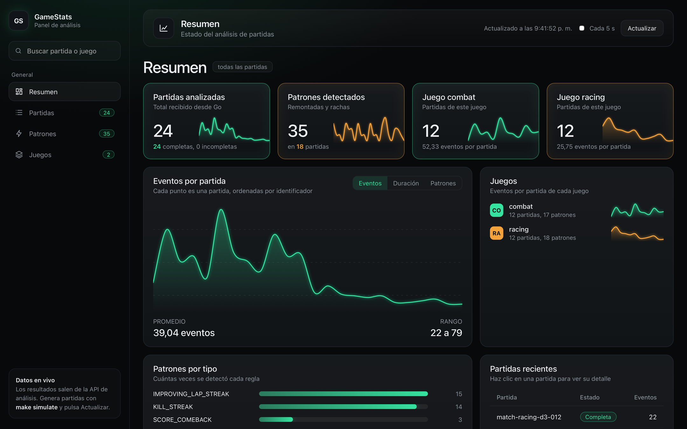
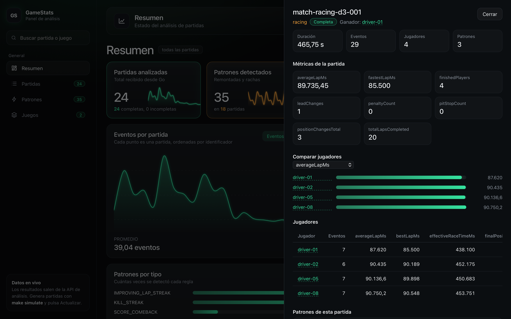

Instituto Tecnológico de Costa Rica
Escuela de Ingeniería en Computación
Lenguajes de Programación
Proyecto: dos paradigmas de programación en un sistema integrado
GameStats, plataforma de procesamiento y análisis de eventos de videojuegos
Estudiante:
Kevin Miranda Méndez
Carné 2024120764
Profesor:
Oscar Víquez Acuña
II Semestre 2026
Este documento presenta el diseño, la construcción y la verificación de GameStats, el proyecto del curso de Lenguajes de Programación. GameStats es una plataforma que recibe los eventos que genera un videojuego durante una partida, los valida y organiza, y los convierte en estadísticas y en situaciones detectadas, por ejemplo una remontada o una racha de eliminaciones.
El proyecto exige repartir el trabajo entre dos paradigmas. Go, imperativo, se encarga de la ingestión, el control del flujo, el estado de las partidas y la concurrencia. Scala, funcional, se encarga de transformar colecciones de eventos en información: métricas, patrones y resultados en JSON. Los dos módulos son programas independientes que se comunican por HTTP con un formato definido.
Los videojuegos no forman parte del alcance. Construí un simulador que hace de fuente externa de eventos y diseñé dos juegos de referencia, carreras (racing) y combate (combat), con sus eventos, estadísticas y reglas. El diseño es genérico: un juego nuevo, escrito en cualquier lenguaje, se conecta enviando eventos con el mismo formato.
El documento explica los tipos de juegos considerados y su justificación, el formato de eventos, la arquitectura, cada módulo, las estadísticas y reglas, la simulación de datos, el versionamiento y despliegue, cómo instalar y ejecutar el sistema, los resultados de las pruebas, la comparación entre el enfoque imperativo y el funcional, y el cumplimiento de cada punto del enunciado. El código completo está en el repositorio https://github.com/kevinmirandaa/GameStats, con su historial de desarrollo.
La carpeta de entrega contiene dos archivos: este documento (en PDF y en DOCX, con el mismo contenido) y el archivo GameStats_Codigo.zip con el proyecto completo. La siguiente tabla indica dónde está cada entregable que pide el enunciado.
| Entregable del enunciado | En este documento | En el código (zip) |
|---|---|---|
| Código fuente completo de los módulos Go y Scala | Secciones 6, 7 y 9 | ingest-go, analytics-scala, simulator |
| Especificación del formato de eventos | Sección 4 | contracts |
| Tipos de juegos considerados y justificación de los eventos | Sección 3 y sección 4.7 | contracts/games |
| Estadísticas y reglas implementadas | Sección 8 | docs/STATS.md |
| Dockerfiles y configuración para ejecutar el sistema | Secciones 10.2 y 10.4 | Dockerfile de cada módulo y deploy |
| Configuración del pipeline CI/CD | Sección 10.3 | .github/workflows |
| Documentación de instalación, ejecución y deployment | Secciones 1.2 y 11 | instalar.sh, instalar.bat y deploy |
| Demostración funcional | Anexo A | qa y el sistema en ejecución |
Esta guía sirve para una computadora con Windows 10 u 11, macOS o Linux que no tiene ninguna herramienta de desarrollo. La única que se necesita es Docker Desktop. No hace falta instalar Go, Scala, Java, sbt ni make: todo se compila dentro de contenedores.
Requisitos de la máquina: conexión a internet, unos 6 GB de disco libres y, de preferencia, 8 GB de memoria.
Paso 1. Instalar Docker Desktop. Descargarlo de https://www.docker.com/products/docker-desktop, ejecutar el instalador y aceptar las opciones por defecto. En Windows, si ofrece activar WSL 2, aceptar y reiniciar la computadora. En Linux se instala Docker Engine con el plugin Compose.
Paso 2. Abrir Docker Desktop y esperar a que indique que está en ejecución (el estado en la esquina inferior izquierda queda en verde). Mientras no esté en ejecución, el instalador de GameStats no puede funcionar.
Paso 3. Descomprimir GameStats_Codigo.zip en cualquier carpeta, por ejemplo en el Escritorio. Queda una carpeta llamada GameStats.
Paso 4. Ejecutar el instalador.
La primera vez tarda entre 5 y 10 minutos, porque descarga las imágenes base y compila los tres módulos. Las siguientes veces tarda unos segundos. El instalador construye las imágenes, levanta el sistema, espera a que esté sano y genera partidas de demostración (24 partidas de racing y combat).
Paso 5. Ver los resultados. Al terminar, el navegador se abre solo en el panel de resultados. Si no se abre, escribir esta dirección en el navegador, o abrir el archivo LEEME_PRIMERO.html, que tiene un botón con el enlace:
En el panel se ven el resumen, las partidas, los patrones detectados y los agregados por juego y por jugador. No hace falta usar la terminal para ver nada.
Paso 6. Detener el sistema cuando se termine: en Windows, doble clic en detener.bat; en macOS y Linux, ejecutar bash detener.sh. Los resultados se conservan para la próxima vez. Para borrarlos, bash detener.sh --borrar-datos.
Si algo falla: comprobar que Docker Desktop esté abierto y en ejecución; comprobar que los puertos 8080 y 8081 no los use otro programa; y, si la primera ejecución se interrumpió, volver a ejecutar el instalador.
Problema. Un sistema de videojuegos genera continuamente información sobre lo que ocurre en sus partidas: jugadores que entran, vueltas completadas, eliminaciones, penalizaciones, desconexiones. Contar esos eventos no basta. Para obtener información útil hay que reconstruir la partida, agrupar por jugador, calcular métricas y detectar secuencias de eventos relacionados entre sí.
Objetivo de diseño. Separar la generación de eventos de su análisis, de modo que el análisis no dependa de un juego en particular. Esto obliga a que el contrato de entrada sea claro y estable, y a que lo específico de cada juego quede aislado en un solo lugar.
Datos que maneja. Eventos con identificador, instante, juego y versión, partida, jugador, tipo, acción y datos propios del juego. A partir de ellos produce análisis por partida, por jugador, por juego, y patrones detectados, todo consultable en formato JSON y en un panel web.
Lo que GameStats no es. No implementa videojuegos, ni motor gráfico, ni interfaz de juego. Tampoco usa brokers de mensajes ni bases de datos externas, porque el enunciado no los exige y habrían añadido complejidad sin aportar a lo que el proyecto evalúa.
El enunciado menciona seis tipos de juegos como ejemplos. Antes de escoger, analicé qué eventos produce cada uno, qué estadísticas permite y qué secuencias interesantes se pueden detectar.
| Tipo | Eventos naturales | Estadísticas y secuencias | Decisión |
|---|---|---|---|
| Carreras | Vuelta completada, cambio de posición, penalización, parada en boxes | Mejor vuelta, consistencia, tiempo efectivo. Secuencias: mejora vuelta a vuelta, remontada | Escogido: datos numéricos continuos |
| Combate | Disparo, daño, eliminación | Eliminaciones, K/D, precisión. Secuencias: racha de eliminaciones, remontada por marcador | Escogido: eventos discretos entre jugadores |
| Ajedrez | Movimiento, captura, jaque | Tiempo por movimiento, capturas, duración | No escogido: es un caso de turnos, parecido a combate en forma |
| Deportes | Pase, gol, falta | Efectividad, asistencias. Secuencia: cadena de pases | No escogido: exige simular posesión y equipos |
| Cartas | Carta jugada, recurso gastado | Cartas usadas, efectividad, recursos | No escogido: exige un modelo de reglas del juego |
| Estrategia | Recurso recolectado, edificio terminado, objetivo cumplido | Eficiencia de recursos, ritmo de expansión | Propuesto como tercer dominio, no implementado |
Por qué carreras y combate. Producen datos de forma muy distinta, y eso sirve para demostrar que la arquitectura es genérica. Carreras genera series numéricas continuas (tiempos de vuelta, posiciones) donde importan la evolución y la consistencia. Combate genera eventos puntuales entre dos jugadores (quién elimina a quién) de los que se derivan marcador, relaciones y rachas. Ambos tienen secuencias claras y verificables, y ambos se pueden simular con datos coherentes y reproducibles. Con dos dominios diferentes se comprueba que el núcleo no depende de ninguno.
Un tercer dominio sin cambiar el núcleo. Para probar la genericidad, el sistema se verificó además con un juego ficticio de caza de tesoros y con un ajedrez inventado durante las pruebas, sin modificar código. Solo se envían eventos con el mismo sobre y el sistema los acepta, los agrupa por partida y produce el análisis genérico.
Un evento representa un hecho ocurrido dentro de una partida. Todos los eventos comparten un sobre común, y la información específica de cada juego va dentro de un campo libre. El contrato está formalizado con un esquema JSON (contracts/event.schema.json) y con documentos por juego (contracts/games/).
| Campo | Obligatorio | Descripción |
|---|---|---|
| schemaVersion | Sí | Versión del contrato. Hoy "1.0". Permite evolucionar el formato sin romper a los productores. |
| eventId | Sí | Identificador único del evento. Go lo usa para descartar duplicados. |
| timestamp | Sí | Instante del hecho, en RFC 3339. Go lo normaliza a UTC. |
| gameId, gameVersion | Sí | Juego que produjo el evento y su versión, por ejemplo "racing" y "1.0". |
| matchId | Sí | Partida a la que pertenece. Es la clave con la que Go agrupa. |
| playerId | Según tipo | Jugador asociado. Obligatorio en PLAYER_JOINED, PLAYER_LEFT y GAME_ACTION. |
| type | Sí | Uno de cinco tipos genéricos: MATCH_STARTED, MATCH_FINISHED, PLAYER_JOINED, PLAYER_LEFT, GAME_ACTION. |
| action | En GAME_ACTION | Acción específica del juego. Es un texto abierto: cada juego define las suyas. |
| data | No | Objeto libre con la información propia de la acción. Go nunca interpreta su contenido. |
Go valida únicamente el sobre. Si un evento tiene varios problemas, devuelve todos los motivos a la vez, no solo el primero. Las reglas son:
Los eventos inválidos no se pierden en silencio: se rechazan con respuesta HTTP 400 y los motivos, se cuentan en las métricas y se guardan en un registro consultable. Se verificó contra 12 ejemplos válidos y 19 inválidos incluidos en el repositorio.
| Juego | Acción | Quién es playerId | Campos de data |
|---|---|---|---|
| racing | LAP_COMPLETED | El piloto | lap, lapTimeMs, position, topSpeedKmh |
| POSITION_CHANGED | El piloto que cambia | lap, fromPosition, toPosition | |
| PENALTY_APPLIED | El penalizado | lap, seconds, reason | |
| PIT_STOP | El piloto | lap, durationMs | |
| combat | ELIMINATION | Quien elimina | victimPlayerId, weapon, distanceMeters |
| DAMAGE_DEALT | Quien daña | targetPlayerId, amount, weapon | |
| SHOT_FIRED | Quien dispara | weapon, hit |
MATCH_STARTED lleva datos de la partida (pista y vueltas en racing, mapa y modo en combat), PLAYER_JOINED el nombre y datos del jugador, y MATCH_FINISHED el ganador y el ranking final: {"winnerPlayerId": "...", "ranking": ["...", "..."]}.
Los eventos no son hechos aislados: se relacionan por tres identificadores del sobre.
| Relación | Cardinalidad | Cómo se expresa |
|---|---|---|
| Juego y partida | 1 a muchas | gameId y matchId |
| Partida y evento | 1 a muchos | matchId |
| Jugador y partida | muchos a muchos | playerId dentro de los eventos de cada partida |
| Evento y jugador | muchos a 1 (más un segundo jugador opcional) | playerId, y un campo de data cuando hay un segundo jugador |
Cada evento existe porque alimenta al menos una estadística o regla. No se incluyó nada que no se use.
| Evento | Juego | Para qué sirve |
|---|---|---|
| MATCH_STARTED, MATCH_FINISHED | Todos | Delimitan la partida, dan su duración y su estado (COMPLETED o INCOMPLETE) y el ranking final. |
| PLAYER_JOINED, PLAYER_LEFT | Todos | Identifican a los participantes y permiten tratar la desconexión de un jugador. |
| LAP_COMPLETED | racing | Base de la mejor vuelta, el tiempo promedio y la regla de racha de vueltas mejores. |
| POSITION_CHANGED | racing | Permite detectar la remontada de carrera y contar adelantamientos. |
| PENALTY_APPLIED | racing | Suma segundos de penalización por piloto. |
| PIT_STOP | racing | Cuenta paradas y su duración. |
| ELIMINATION | combat | Base de las eliminaciones, las muertes y la regla de racha de eliminaciones. |
| DAMAGE_DEALT | combat | Suma el daño por jugador y alimenta la regla de remontada por marcador. |
| SHOT_FIRED | combat | Permite calcular la precisión (disparos acertados sobre disparos). |
Cada partida se clasifica por su juego (gameId), y tanto el análisis como los contadores de Go se separan por juego.

Figura 1. Arquitectura general. Docker Compose levanta los dos módulos; el simulador corre bajo demanda. Go acepta eventos por HTTP o por una carpeta, y Scala guarda los resultados en archivos.
| Go (imperativo) | Scala (funcional) |
|---|---|
| Recibir eventos por HTTP | Decodificar la partida recibida, con errores explícitos |
| Validar la estructura y descartar duplicados | Transformar colecciones inmutables de eventos |
| Mantener el estado de cada partida | Calcular métricas por jugador, partida y juego |
| Procesar varias partidas en paralelo con goroutines y channels | Detectar patrones sobre secuencias de eventos |
| Decidir cuándo una partida está lista y enviarla ordenada | Guardar y servir los resultados en JSON |
El enunciado permite tres mecanismos entre Go y Scala. Los comparé antes de decidir.
| Opción | A favor | En contra | Decisión |
|---|---|---|---|
| Archivos estructurados | Muy simple | No parece un sistema en ejecución continua; difícil saber cuándo leer | Descartada |
| Broker (RabbitMQ, Kafka) | Asíncrono y desacoplado; Kafka permite reprocesar | Agrega infraestructura, duplicados y orden que hay que manejar; el proyecto no usa persistencia ni reproceso | Descartada: complejidad sin necesidad |
| HTTP/REST con JSON | Simple, fácil de probar con curl, independiente de lenguaje, fácil de contenerizar | Síncrono; sin cola propia | Escogida |
La falta de cola se compensa dentro de Go: la concurrencia con goroutines y los reintentos con espera creciente cubren la parte de flujo que importa. Un componente externo puede producir eventos conociendo solo el contrato, sin saber cómo está hecho GameStats por dentro.
| Módulo | Endpoint | Qué hace |
|---|---|---|
| Go :8080 | POST /events | Un evento. 202 aceptado, 400 con los motivos, 409 duplicado o partida ya cerrada, 503 sobrecarga o apagado. |
| POST /events/batch | Lista de eventos. Responde cuántos se aceptaron y cuántos se rechazaron, con motivos. | |
| GET /health | Estado del servicio. | |
| GET /metrics | Contadores: recibidos, aceptados, rechazados, duplicados, partidas activas, enviadas y fallidas. | |
| GET /rejected | Últimos eventos rechazados con sus motivos. | |
| Scala :8081 | POST /analyze | Recibe una partida completa de Go, la analiza, la guarda y devuelve el análisis. |
| GET /stats/matches | Lista de partidas analizadas, con filtro por juego. | |
| GET /stats/matches/{matchId} | Análisis completo de una partida. | |
| GET /stats/players/{playerId} | Agregado de un jugador en todas sus partidas. | |
| GET /stats/games/{gameId} | Agregado de un juego. | |
| GET /patterns | Patrones detectados, con filtro por juego y por tipo. | |
| GET / | Panel web con las partidas, las métricas, los patrones y los agregados. |
Lo que Go envía a Scala es una partida completa: {gameId, gameVersion, matchId, status, events}. El estado es COMPLETED si llegó MATCH_FINISHED, o INCOMPLETE si la partida se cerró por inactividad. Los eventos van ordenados por tiempo y sin duplicados.
Un juego nuevo, escrito en cualquier lenguaje (incluso en Prolog), solo necesita enviar eventos HTTP con el sobre común. No hay que modificar Go. Para obtener estadísticas propias se agrega un archivo en Scala con el analizador del juego y una línea de registro; si no se agrega, el juego igual recibe conteos, jugadores, duración y ganador. La misma arquitectura sirve para recibir eventos de la futura consola de juegos.
La Figura 2 muestra la plataforma completa a la que apunta el diseño: varios juegos (incluso en otros lenguajes) y la futura consola de juegos envían eventos al mismo contrato, ya sea por HTTP o dejando archivos en una carpeta. El núcleo no cambia; solo se agregan fuentes y analizadores.

Figura 2. Plataforma completa a futuro, con varias fuentes de eventos y el mismo núcleo.
El módulo ingest-go usa solo la biblioteca estándar de Go y tiene unas 1 535 líneas de código en once paquetes pequeños:
| Paquete | Responsabilidad |
|---|---|
| event | Modelo del evento, tipos y reglas de qué tipo exige jugador o acción. |
| validation | Validación del sobre; reporta todos los motivos de rechazo a la vez. |
| deduplication | Registro seguro para uso concurrente de los eventId ya vistos. |
| matchregistry | Corazón del módulo: una goroutine por partida, cierre y entrega. |
| analyticsclient | Envío a Scala con reintentos y espera creciente. |
| ingestion | Une validación, deduplicación y registro de partidas. |
| inbox | Vigila la carpeta de entrada y entrega a la ingestión los eventos de los archivos. |
| httpapi | Los endpoints HTTP. |
| rejectedlog, metrics | Registro de rechazados y contadores. |
| configuration | Configuración por variables de entorno con valores por defecto. |
Cada partida activa tiene su propia goroutine con un channel de entrada. Varias partidas, de varios juegos, avanzan en paralelo sin bloquearse entre sí. El registro mantiene un mapa de partidas activas protegido por un mutex y entrega cada evento al channel de su partida sin bloquear: si el buzón está lleno responde 503 y el evento puede reenviarse.
Fragmento 1. Ciclo de vida de una partida en Go: recibir, acumular y cerrar. Es código imperativo con estado mutable controlado por una sola goroutine.
El cierre ocurre por MATCH_FINISHED (tras una espera corta de 500 ms por eventos desordenados) o por inactividad (30 s por defecto). Para no perder eventos en el cierre, la partida se retira primero del registro bajo el mutex y después se vacía su buzón. Luego se ordenan los eventos por tiempo con una ordenación estable y se entregan a Scala. Un evento de una partida ya cerrada se rechaza con 409.
Además de HTTP, Go puede leer eventos de archivos. Un vigilante revisa periódicamente la carpeta indicada en INBOX_DIRECTORY (cada INBOX_POLL_INTERVAL_MILLISECONDS) y pasa cada evento por la misma validación, deduplicación y registro de partidas que los eventos HTTP. No hay una segunda ruta de lógica.
El módulo analytics-scala usa Scala 3, Cask para HTTP y upickle para JSON, y tiene unas 1 070 líneas de código en 23 archivos. Todo el dominio es inmutable: case class y enum, sin var, sin null y sin excepciones para controlar el flujo (se usan Either y Option). Los efectos, como HTTP y el almacenamiento, quedan en los bordes; el análisis es una composición de funciones puras.
| Paquete | Responsabilidad |
|---|---|
| domain | Evento, partida, análisis, patrón y demás modelos inmutables. |
| decoding | De JSON a partida, devolviendo un Either con el motivo si falla. |
| analysis | Pipeline de análisis genérico, trait GameAnalyzer y registro de analizadores. |
| analysis/games | Un analizador por juego: métricas y reglas de racing y de combat. |
| aggregation | Agregados por jugador y por juego, genéricos. |
| encoding, storage, service, http | Resultados a JSON, almacén (en memoria o en archivos JSON), orquestación y rutas HTTP, incluido el panel web (un solo archivo HTML en los recursos del módulo). |
Persistencia. Con la variable RESULTS_DIRECTORY, Scala guarda cada análisis como un archivo JSON (escrito a un temporal y movido de forma atómica) y al arrancar los carga de nuevo con un decodificador que devuelve Either; los archivos dañados se reportan y se omiten. Sin la variable usa el almacén en memoria. Ambos cumplen la misma interfaz AnalysisStore.
Un juego nuevo se agrega con un archivo que implementa GameAnalyzer (su gameId y una función pura que recibe la partida y devuelve métricas y patrones) y una línea que lo registra. El análisis genérico (conteos por tipo y acción, duración, jugadores y ganador) se ejecuta siempre. Las métricas son mapas de nombre a número, así que un juego nuevo añade métricas sin cambiar el modelo.
| Operación | Dónde | Para qué |
|---|---|---|
| filter | RacingMetrics, CombatMetrics, Aggregation | Quedarse con las vueltas, eliminaciones o partidas relevantes |
| map, flatMap | MatchAnalysisPipeline, RacingMetrics, BatchDecoder | Transformar eventos y encadenar pasos que pueden fallar |
| groupBy, groupMap | RacingPatterns, CombatMetrics, Aggregation | Agrupar vueltas por piloto y métricas por nombre |
| foldLeft | RacingPatterns, CombatPatterns | Recorrer los eventos acumulando rachas, marcadores y desventajas sin variables mutables |
| reduce (groupMapReduce) | MatchAnalysisPipeline, Aggregation | Contar eventos por tipo y acción, y patrones por nombre |
| collect | Statistics, EventData | Extraer valores presentes con pattern matching |
| Composición | AnalysisEncoder, BatchDecoder, RacingPatterns | andThen para el redondeo, for sobre Either y cadenas de Option |
| sortBy, zipWithIndex, maxByOption, count | MatchAnalysisPipeline, RacingPatterns | Ordenar por tiempo, ordenar patrones y encontrar el peor puesto |
Fragmento 2. Detección de rachas en Scala: un foldLeft que lleva las rachas abiertas y cerradas como valores inmutables.
Cada métrica se puede calcular únicamente con los eventos definidos para el juego. Una métrica sin datos suficientes se omite del resultado, nunca se rellena con cero, porque un cero inventado se confundiría con un valor real y distorsionaría los promedios.
| Nivel | Métrica | Cómo se calcula |
|---|---|---|
| Jugador | bestLapMs, averageLapMs | Mínimo y promedio de lapTimeMs de sus vueltas |
| Jugador | lapTimeStdDevMs | Desviación estándar de sus tiempos: mide la consistencia |
| Jugador | overtakesMade | Cambios de posición donde la posición mejora |
| Jugador | penaltySecondsTotal, pitStopCount | Suma de penalizaciones y cantidad de paradas |
| Combina eventos | effectiveRaceTimeMs | Suma de tiempos de vuelta más las penalizaciones: cruza LAP_COMPLETED y PENALTY_APPLIED |
| Combina eventos | positionsGained | Posición de salida (PLAYER_JOINED) menos posición final (MATCH_FINISHED) |
| Partida | fastestLapMs, totalLapsCompleted, leadChanges | Mejor vuelta de todos, vueltas totales y cambios de líder |
| Nivel | Métrica | Cómo se calcula |
|---|---|---|
| Jugador | eliminations, deaths | Eliminaciones realizadas y recibidas (la muerte se deriva de la víctima) |
| Jugador | killDeathRatio | Eliminaciones entre el mayor de muertes y 1 |
| Jugador | accuracyPercent | Disparos que acertaron entre disparos hechos, por 100 |
| Combina eventos | damagePerElimination | Daño total entre eliminaciones: cruza DAMAGE_DEALT y ELIMINATION |
| Partida | totalEliminations, eliminationsPerMinute | Total y ritmo por minuto según la duración de la partida |
| Partida | mostEliminationsByOnePlayer | Máximo de eliminaciones de un jugador |
| Regla | Definición | Umbral |
|---|---|---|
| RACE_COMEBACK | El ganador de la carrera llegó a ir cuarto o peor en alguna vuelta y terminó primero. | Posición 4 |
| IMPROVING_LAP_STREAK | Un piloto hizo vueltas consecutivas, cada una estrictamente más rápida que la anterior. Tiempos iguales no continúan la racha. | 3 vueltas |
| KILL_STREAK | Un jugador acumula eliminaciones seguidas sin ser eliminado entre ellas. | 3 eliminaciones |
| SCORE_COMEBACK | El ganador llegó a ir perdiendo por varias eliminaciones frente a quien lideraba y terminó ganando. | Desventaja de 3 |
Cada patrón detectado informa el jugador, el evento donde empieza, el evento donde termina y datos numéricos (por ejemplo la longitud de la racha). Las reglas que dependen del ganador solo se evalúan si la partida terminó (COMPLETED).
Scala calcula, de forma genérica y sin conocer el juego, agregados de jugador y de juego: partidas jugadas y ganadas, y para cada métrica su promedio, mínimo y máximo (mean_, min_, max_), más el conteo de cada patrón (patternCount_). Así, la mejor vuelta histórica de un juego es min_fastestLapMs.
Fragmento 3. Resultado real de una partida simulada, consultado por HTTP.
El simulador es un programa Go independiente que hace de fuente externa. Solo habla HTTP y no comparte código con Go ni Scala, igual que lo haría un juego real. Genera partidas coherentes: en racing, las posiciones de cada vuelta salen de los tiempos acumulados y el ranking sigue el tiempo total.
| Escenario | Qué genera | Partidas | Eventos |
|---|---|---|---|
| normal | Partidas aleatorias sin forzar nada | 8 | 418 |
| comeback | Remontada de carrera y remontada por marcador | 8 | 265 |
| killstreak | Racha de eliminaciones y racha de vueltas mejores | 8 | 299 |
| out-of-order | Eventos con vecinos intercambiados | 8 | 418 |
| duplicates | Algunos eventos enviados dos veces | 8 | 504 |
| invalid-events | Un evento corrupto cada diez, de seis tipos de error | 8 | 457 |
| disconnect | Un jugador que abandona la partida | 8 | 426 |
| unfinished-match | Partida sin MATCH_FINISHED | 8 | 332 |
| bulk | Volumen alto sin ritmo | 400 | 20 980 |
| mixed-parallel | Mezcla de todo lo anterior; es el escenario de la demostración | 24 | 965 |
Los jugadores salen de un conjunto fijo de doce por juego, así que un mismo jugador aparece en varias partidas y se pueden demostrar los agregados por jugador.
El proyecto se desarrolló por fases, cada una en su propia rama y unida a main mediante un Pull Request, con mensajes de commit por tipo (feat, fix, test, docs, build, ci). Antes de cada unión se verificó la fase ejecutando el sistema.
| PR | Fase | Resultado |
|---|---|---|
| #1 | Fundación del repositorio | Estructura, esquema del evento, 29 ejemplos válidos e inválidos |
| #2 | Diseño de estadísticas | Juegos, eventos, métricas, reglas y resultados esperados calculados a mano |
| #3 | Servicio de ingesta en Go | Validación, goroutine por partida, reintentos |
| #4 | Núcleo de análisis en Scala | Decodificador, análisis genérico, agregados, API |
| #5 | Analizadores de racing y combat | Métricas y cuatro reglas de secuencia |
| #6 | Simulador de eventos | Diez escenarios, reproducible, en paralelo |
| #7 | Ejecución con Docker Compose | Un comando levanta todo; prueba de humo |
| #8 | Revisión integral de calidad | 69 verificaciones de extremo a extremo, carga y estándares |
| #9 | Pipelines de CI/CD | Integración y despliegue continuos |
| #10 | Documentación | Este documento |
Cada módulo tiene un Dockerfile de dos etapas: la primera compila con todas las herramientas y la segunda copia solo el resultado, por eso las imágenes de Go pesan unos 21 MB. Las versiones están fijadas (Go 1.22, Scala 3.3.6, sbt 1.10.11, Java 21, Alpine 3.20) y los contenedores corren con un usuario sin privilegios. Docker Compose define los tres servicios con una red interna, comprobaciones de salud, orden de arranque (Go espera a que Scala responda) y límite de memoria. El simulador corre bajo demanda.
| Imagen | Tamaño | Notas |
|---|---|---|
| gamestats-ingest | 21 MB | Binario Go estático sobre Alpine |
| gamestats-simulator | 21 MB | Binario Go estático sobre Alpine |
| gamestats-analytics | 421 MB | Scala empaquetado con sbt sobre un JRE 21 |
Hay dos pipelines de GitHub Actions. En cada Pull Request, el CI revisa el formato y ejecuta el análisis estático y las pruebas de Go (con detector de condiciones de carrera) y de Scala, comprueba los estándares de código, construye las tres imágenes, levanta el sistema con Compose y ejecuta una prueba de humo. Al unir un cambio a main, el CD publica las tres imágenes en GitHub Container Registry con el identificador del commit y después las despliega en un entorno limpio, volviendo a ejecutar la prueba de humo contra las imágenes publicadas.
Entorno definido. El entorno de despliegue es Docker Compose con las imágenes publicadas en el registro (deploy/docker-compose.published.yml). El pipeline lo despliega y verifica en cada cambio, y el mismo archivo sirve para levantar el sistema en cualquier máquina con Docker. No se usan secretos: el pipeline usa el token que GitHub genera en cada ejecución. En la última ejecución, los cinco trabajos del CI y los dos del CD terminaron correctamente (el CD en 2 min 14 s).
Para que el sistema se pueda instalar en una máquina limpia que solo tenga Docker, el repositorio incluye instalar.sh y detener.sh (macOS y Linux) e instalar.bat y detener.bat (Windows). El instalador comprueba que Docker esté activo, construye las imágenes, levanta el sistema y espera a que esté sano; con la opción de demostración también genera partidas. No se necesita Go, Scala, sbt, Java ni make.
Los datos viven en volúmenes de Docker con nombre: inbox-data (carpeta de entrada), ingest-data (registro de rechazados) y analytics-data (resultados). Así sobreviven a un reinicio y no dependen de permisos de carpetas del sistema anfitrión. Un archivo adicional (docker-compose.inbox-folder.yml) permite usar una carpeta real ./inbox en su lugar.
Forma más simple, en una máquina donde solo esté instalado Docker Desktop (abierto). El instalador construye todo, genera datos de demostración y abre el panel en http://localhost:8081. El archivo LEEME_PRIMERO.html del proyecto tiene además un botón grande con ese enlace:
Forma con make:
El comando make simulate espera a que Go termine de entregar las partidas a Scala, así que las consultas siguientes ya devuelven resultados. Los resultados también se ven en el navegador, en el panel web http://localhost:8081 (sección 11.7):
Con las imágenes ya publicadas por el pipeline, en cualquier máquina con Docker:
Para volver a una versión anterior, GAMESTATS_TAG se fija al identificador del commit deseado. La guía completa está en deploy/DEPLOY.md.
| Variable | Módulo | Valor por defecto |
|---|---|---|
| PORT | Go, Scala | 8080 y 8081 |
| ANALYTICS_URL | Go | http://localhost:8081 |
| MATCH_IDLE_TIMEOUT_SECONDS | Go | 30 |
| MATCH_FINISH_GRACE_MILLISECONDS | Go | 500 |
| INBOX_DIRECTORY | Go | vacío (desactivado); en Compose, /inbox |
| INBOX_POLL_INTERVAL_MILLISECONDS | Go | 1000 |
| RESULTS_DIRECTORY | Scala | vacío (memoria); en Compose, /data/results |
| SIMULATOR_OUTPUT_DIRECTORY | Simulador | vacío (usa HTTP) |
| SIMULATOR_SCENARIO, SIMULATOR_SEED | Simulador | mixed-parallel, 42 |
Hay cuatro formas de comprobarlo (además del instalador de la sección 11.2), de la más rápida a la más completa. Las tres primeras se hacen sobre el código entregado; la cuarta no requiere instalar nada.
| # | Qué se hace | Comandos | Resultado esperado |
|---|---|---|---|
| 1 | Prueba automática de extremo a extremo (necesita Docker, make, curl y python3) | make smoke | Termina con "PRUEBA DE HUMO APROBADA" y 20 verificaciones en OK, en unos 30 segundos |
| 2 | Probarlo a mano, solo con Docker (funciona también en Windows, sin make) | docker compose -f deploy/docker-compose.yml up -d --build --wait docker compose -f deploy/docker-compose.yml --profile simulation run --rm simulator sleep 10 curl localhost:8081/stats/matches | El simulador informa 24 partidas y 965 eventos. Sin make hay que esperar unos 10 segundos para que Go entregue las partidas; después la consulta devuelve las 24 partidas analizadas, de racing y combat, todas COMPLETED |
| 3 | Pruebas unitarias de cada módulo (necesita Go 1.22+, Java 21 y sbt) | cd ingest-go && go test -race ./... cd simulator && go test -race ./... cd analytics-scala && sbt test | Todas en verde: 65 pruebas en ingest-go, 52 en el simulador y 92 en Scala |
| 4 | Ver el CI/CD en GitHub, sin instalar nada | Abrir https://github.com/kevinmirandaa/GameStats, pestaña Actions | Las ejecuciones de CI y CD en verde y, en la página principal, la sección Packages con las tres imágenes publicadas |
Después de la opción 2, el resto del sistema se explora con las consultas de la sección 11.2: /patterns muestra las remontadas y rachas detectadas, /stats/games/racing los agregados del juego y localhost:8080/metrics lo que Go aceptó y rechazó. Para comprobar que el sistema es genérico se puede enviar un evento de un juego inventado (Anexo A, paso 10) y ver que se acepta sin cambiar código. Al terminar, docker compose -f deploy/docker-compose.yml --profile simulation down --volumes limpia todo.
Con el sistema levantado y datos generados, los resultados se ven en el navegador en http://localhost:8081. El panel lo sirve el propio módulo Scala y usa la misma API de consulta de la sección 5.3, así que no hay nada más que instalar: es un solo archivo HTML con JavaScript, sin librerías externas. Tiene un diseño oscuro, con una barra lateral de navegación y cuatro vistas.
El botón Actualizar vuelve a leer los datos y la casilla "Cada 5 s" los refresca mientras se generan partidas.

Figura 3. Panel web, vista de resumen, con los datos de una ejecución del escenario mixed-parallel.

Figura 4. Panel web, detalle de una partida de racing con la comparación entre jugadores.
Tras reiniciar Scala, los resultados se vuelven a cargar desde los archivos JSON guardados, y localhost:8080/metrics muestra los archivos procesados y los eventos por juego.
| Tipo | Resultado |
|---|---|
| Pruebas unitarias y de componentes | 209 pruebas: 65 en Go de ingesta, 52 en el simulador y 92 en Scala, más de 2 700 líneas de pruebas. Las de Go se ejecutan con el detector de condiciones de carrera. |
| Resultados esperados | Las cuatro partidas de ejemplo se comparan completas contra resultados calculados a mano y verificados con una segunda implementación independiente: métricas, jugadores y patrones. |
| Prueba de humo | 20 verificaciones: archivos en la carpeta de entrada, resultados que persisten tras reiniciar Scala, 24 partidas analizadas, cuatro patrones presentes, agregados disponibles, rechazos esperados y partidas sin cierre llegando como INCOMPLETE. Dura unos 25 segundos. |
| Prueba integral | 68 verificaciones sobre el sistema en Docker: eventos válidos, inválidos, duplicados y desordenados, partidas en paralelo, caída temporal de Scala y un juego inventado que se acepta sin cambiar código. |
| Estándares de código | Un script automático busca comentarios, var, null y errores ignorados, y se ejecuta en cada Pull Request. |
El mismo problema, convertir un flujo de eventos en conocimiento, se resolvió con dos paradigmas, y cada uno encajó en un lugar distinto.
| Go, imperativo | Scala, funcional | |
|---|---|---|
| Pregunta que responde | ¿Cómo recibo, organizo y controlo un flujo continuo? | ¿Cómo transformo una colección de eventos en conocimiento? |
| Estado | Mutable, pero confinado: cada partida es de una sola goroutine | Inmutable: los datos no cambian, se crean datos nuevos |
| Concurrencia | Goroutines y channels, mutex en el registro | No necesita sincronización: funciones puras sobre datos inmutables |
| Control del tiempo | Temporizadores, cierre, reintentos, señales de apagado | Sin noción de tiempo real: opera sobre una lista ya ordenada |
| Errores | Valores de error explícitos en cada paso | Either y Option componibles con for |
| Cálculo de métricas | Habría sido bucles con acumuladores | Filtrar, agrupar, plegar: el código se parece a la definición |
Dónde brilla lo imperativo. En el ciclo de vida de una partida (Fragmento 1) hay estado que cambia con el tiempo: eventos acumulados, un temporizador que se reinicia, una señal de parada. Modelarlo con un bucle y una variable controlada por una sola goroutine es natural y claro. Hacerlo de forma puramente funcional habría exigido representar el tiempo y la concurrencia con abstracciones mucho más pesadas.
Dónde brilla lo funcional. Detectar una racha de eliminaciones (Fragmento 2) es plegar una secuencia ya ordenada llevando un estado. Con foldLeft el estado es un valor inmutable, la función es pura y se prueba con una lista de eventos de juguete, sin servidor ni reloj. Las métricas se escriben casi como su definición: filtrar las vueltas del piloto, tomar los tiempos y calcular el mínimo. No hay bucles ni variables que cambiar.
Ventajas y limitaciones. Lo imperativo da control fino sobre recursos y tiempo, pero obliga a razonar con cuidado sobre quién cambia qué: el cierre de una partida sin perder eventos requirió retirarla del registro bajo un mutex antes de vaciar su buzón. Lo funcional hace el análisis fácil de probar y de componer, pero depende de que alguien más entregue los datos completos y ordenados, y su costo es que cada transformación crea estructuras nuevas. Dividir el sistema así saca partido de las fortalezas de cada uno.
| Requisito | Estado | Dónde está |
|---|---|---|
| Modelo de eventos coherente y documentado; relaciones entre eventos, partidas y jugadores | Cumple | Sección 4; esquema JSON y contratos por juego |
| Estadísticas derivables de los eventos y regla basada en una secuencia | Cumple | Sección 8: cuatro reglas |
| Datos de prueba suficientes | Cumple | Sección 9: diez escenarios, hasta 20 980 eventos |
| Go: recibir, validar, administrar el flujo, mantener el estado por partida y enviar a Scala | Cumple | Secciones 5 y 6 |
| Go: concurrencia con goroutines y channels | Cumple | Sección 6.1 |
| Scala: colecciones y operaciones funcionales justificadas | Cumple | Sección 7.2 |
| Scala: estadísticas, reglas y resultados estructurados en JSON | Cumple | Secciones 7 y 8 |
| Módulos independientes con comunicación documentada y formato claro para un productor externo | Cumple | Secciones 4 y 5.3 |
| Fuente simulada: varias partidas, jugadores, juegos en paralelo, casos normales y especiales | Cumple | Sección 9 |
| Funcionalidades mínimas 1 a 10 (recibir, validar, identificar, agrupar, estadística por jugador, por partida, combinada, regla por secuencia, consulta y presentación de resultados) | Cumple | Secciones 5 a 8 y 11.7; make smoke |
| Go lee eventos de una fuente continua (HTTP y carpeta vigilada) | Cumple | Secciones 5.4 y 6.4 |
| Estadísticas almacenadas y recuperables tras reiniciar | Cumple | Sección 7 (persistencia) y 11.8 |
| Instalación en una máquina limpia solo con Docker | Cumple | Secciones 10.4 y 11.2 |
| Clasificación por juego | Cumple | Secciones 4.7 y 6.4 (contadores por juego) |
| Repositorio Git con historial | Cumple | Sección 10.1; 42 commits y 10 Pull Requests |
| Construcción reproducible, Docker y ejecución integrada | Cumple | Sección 10.2; make up |
| Pipeline de CI/CD con compilación y manejo de contenedores | Cumple | Sección 10.3; .github/workflows |
| Despliegue de una versión funcional en un entorno definido | Cumple | Secciones 10.3 y 11.4 |
| Entregables: código, formato de eventos, juegos y justificación, estadísticas y reglas, Dockerfiles, CI/CD, instalación, ejecución y despliegue, demostración | Cumple | Este documento, el código y el Anexo A |
| Genérico: un conjunto nuevo de eventos entra sin rehacer el sistema | Cumple | Secciones 4.4 y 5.5; prueba con un juego inventado |
| Justificar qué se beneficia de lo imperativo y qué de lo funcional | Cumple | Sección 13 |
GameStats cumple con la arquitectura que pide el enunciado: Go concentra la ingestión, el estado y la concurrencia, y Scala concentra el análisis funcional, comunicados por HTTP con un contrato claro. Lo más importante del diseño es la separación entre lo común y lo específico: el sobre del evento es estable y el contenido de cada juego queda aislado en un solo archivo, de modo que un juego nuevo se incorpora sin rehacer nada.
El proceso mostró también que cada paradigma tiene su lugar. El estado que cambia con el tiempo, como el ciclo de vida de una partida, se maneja mejor con control imperativo. La transformación de una lista de eventos en estadísticas y patrones es más clara y más fácil de probar con funciones puras. El sistema se construyó por fases, se verificó ejecutándolo de punta a punta y se despliega de forma automática, lo que permite confiar en que lo que se entrega funciona.
La demostración dura entre cinco y ocho minutos y se hace sobre el sistema real en Docker.
| # | Paso | Qué se muestra |
|---|---|---|
| 1 | Explicar la arquitectura con la Figura 1 | Fuente, Go, Scala y consulta; por qué REST |
| 2 | make up | Los dos servicios sanos en unos 12 segundos |
| 3 | make simulate | Resumen: 24 partidas, 965 eventos, 937 aceptados, 28 rechazados (duplicados e inválidos) |
| 4 | curl localhost:8080/metrics | Lo que Go recibió, aceptó y rechazó; 24 partidas enviadas, 0 fallidas |
| 5 | Abrir http://localhost:8081 en el navegador | El panel web: resumen, tabla de partidas; al pulsar una partida, sus métricas, la gráfica por jugador y los patrones; al pulsar un jugador, sus agregados |
| 6 | curl localhost:8081/stats/matches | 24 partidas analizadas, de racing y combat, todas COMPLETED |
| 7 | curl localhost:8081/patterns | Las remontadas y rachas detectadas |
| 8 | Una partida: curl localhost:8081/stats/matches/match-racing-demo-001 | Métricas por jugador, por partida y el patrón detectado |
| 9 | curl localhost:8081/stats/games/racing y /stats/players/fighter-02 | Agregados entre partidas |
| 10 | Enviar un evento de un juego inventado con curl -X POST localhost:8080/events -d '...' | Se acepta sin cambiar código: la arquitectura es genérica |
| 11 | Mostrar la pestaña Actions de GitHub | El CI y el CD en verde y los tres paquetes publicados |
| 12 | make inbox-demo y luego curl localhost:8080/metrics | Go lee una partida desde la carpeta de entrada; aparecen archivos procesados y eventos por juego |
| 13 | docker compose -f deploy/docker-compose.yml restart analytics y consultar /stats/matches | Los resultados persisten tras el reinicio |
| 14 | make down | El sistema se detiene y se limpia |
Para el paso 10, un evento de ejemplo: